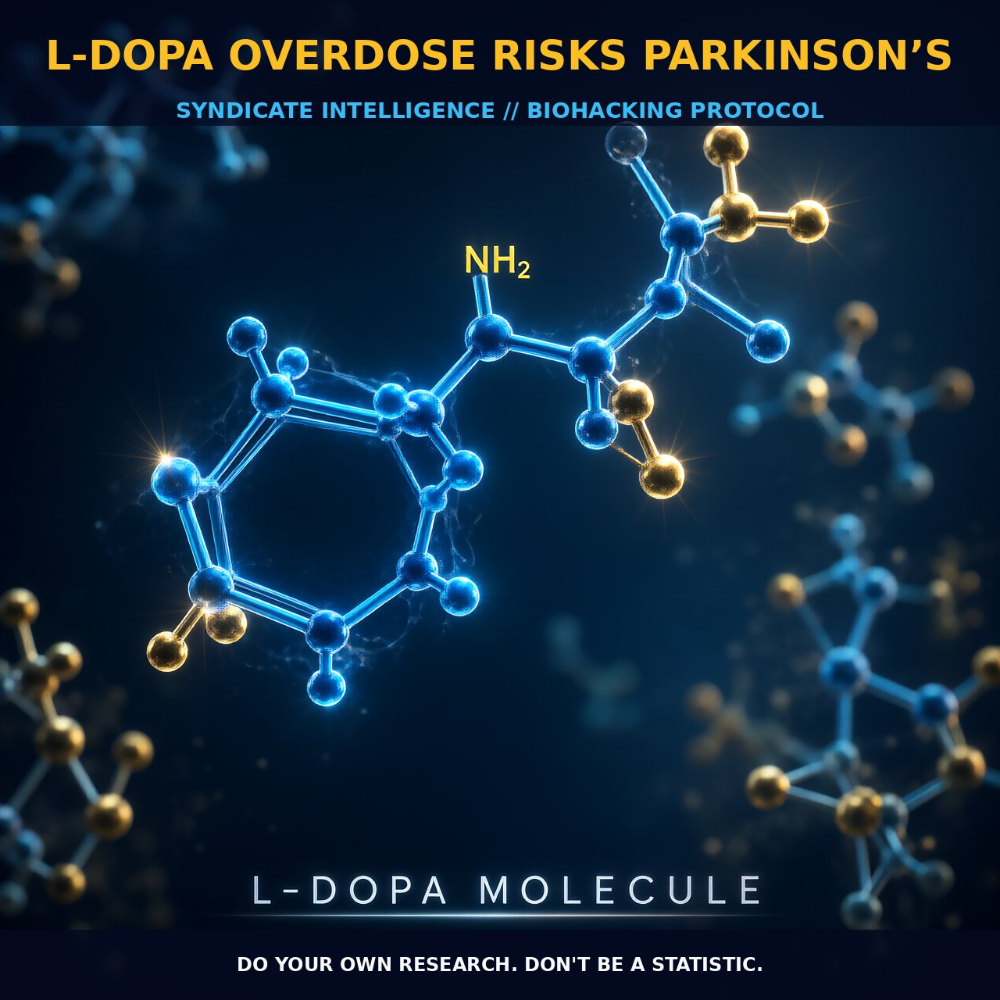

L-DOPA Overdose Risks in Parkinson’s Disease

1. The Mechanism
L-DOPA, or L-3,4-dihydroxyphenylalanine, is a crucial precursor in the synthesis of dopamine, norepinephrine, and epinephrine within the brain. Synthesized from the amino acid L-tyrosine, L-DOPA serves as the immediate precursor to dopamine and can easily cross the blood-brain barrier, making it a primary therapeutic agent for Parkinson’s disease. In the context of Parkinson’s, where dopamine-producing neurons in the substantia nigra are depleted, L-DOPA supplementation provides a means to restore dopamine levels.
The conversion of L-DOPA to dopamine is catalyzed by the enzyme dopa decarboxylase, which is found both in peripheral tissues and the brain. However, the mechanism of action for L-DOPA involves more than just its conversion to dopamine. L-DOPA modulates various neurotransmitter systems, including dopaminergic, noradrenergic, and serotonergic pathways. It also influences motor control and hormone secretion, among other physiological functions.
The effectiveness and safety of L-DOPA can be influenced by individual metabolic variations, particularly those involving the CYP450 system in the liver. These genetic differences can lead to variations in how L-DOPA is metabolized and can affect the dosing and efficacy of the compound. Additionally, the presence of L-DOPA in the body can lead to the synthesis of other neurotransmitters, such as norepinephrine and epinephrine, further complicating the pharmacological effects.
2. Biological Leverage
The biological leverage of L-DOPA in Parkinson’s disease lies primarily in its ability to replenish dopamine levels, which are severely depleted in the brains of patients with Parkinson’s. Dopamine is essential for motor control, and its deficiency leads to symptoms such as tremors, rigidity, and bradykinesia. By providing the precursor L-DOPA, the brain can synthesize dopamine and mitigate these symptoms.
However, the efficacy of L-DOPA can diminish over time, leading to motor fluctuations and dyskinesias, which are characterized by involuntary movements. Moreover, the regulation of dopamine levels through L-DOPA supplementation can influence various neurotransmitter pathways. Dopamine dysregulation syndrome, characterized by symptoms such as pathological gambling, hypersexuality, compulsive eating, and aggressiveness, can arise from excessive dopamine levels. This syndrome is not exclusive to Parkinson’s patients but is also observed in those with schizophrenia or after excessive L-DOPA treatment.
The metabolic pathways involved in the synthesis and breakdown of L-DOPA play a critical role in its efficacy and safety. The enzyme tyrosine hydroxylase, which converts tyrosine to L-DOPA, is a rate-limiting step in dopamine synthesis. Variations in the activity of this enzyme can influence the conversion efficiency of L-DOPA to dopamine. Furthermore, the enzyme dopa decarboxylase is responsible for converting L-DOPA to dopamine, and its activity can be affected by various factors, including genetic differences and the presence of other compounds that inhibit or enhance its activity.
3. Tactical Implementation
Practical implementation of L-DOPA therapy in Parkinson’s disease requires careful consideration of dosage, timing, and potential interactions. For Parkinson’s patients, the recommended dosage of L-DOPA typically ranges from 250 to 500 mg per dose, administered 3 to 4 times a day. The dosage should be adjusted based on individual response, with the aim of balancing symptom relief and minimizing side effects.
The timing of L-DOPA administration is also crucial, as its effects can vary depending on the time of day and the specific symptoms being targeted. Stacking L-DOPA with other compounds can enhance its efficacy and manage side effects. For example, combining L-DOPA with carbidopa can reduce peripheral conversion of L-DOPA to dopamine, thereby increasing the amount of L-DOPA that reaches the brain. This can improve the therapeutic window and reduce the risk of side effects such as nausea and vomiting.
Ensuring adequate vitamin B6 levels can also optimize the conversion of L-DOPA to dopamine. Monitoring the effectiveness of L-DOPA therapy involves regular assessments of motor function and the emergence of side effects. Patients should be aware of the potential for motor fluctuations and dyskinesias, which can arise from prolonged L-DOPA therapy. Adjusting the dosage and timing can help manage these fluctuations. Additionally, periodic evaluation of cognitive function and mood can provide insights into the broader impacts of L-DOPA on neurotransmitter systems.
Prostar Life Hack
Ensure adequate vitamin B6 levels to optimize the conversion of L-DOPA to dopamine, enhancing therapeutic efficacy and reducing side effects.
[ AUTHOR: LEAD TECHNICAL RESEARCHER ]